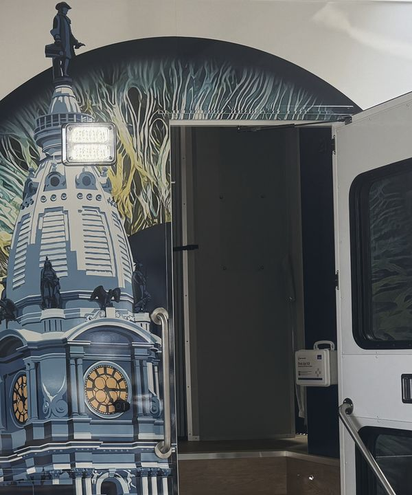

Chequeos de la vista gratis
No necesita cita.
Dónde estará la clínica móvil
-
De 5:30 a 7:30 p. m.
Mapa de Chosen 300 Ministries, West Philadelphia, se abre en otra páginaChosen 300 Ministries, West Philadelphia
3959 Lancaster Ave, Philadelphia, PA 19104
-
De 3 a 6 p. m.
Mapa de St. Cyprian Church, se abre en otra páginaSt. Cyprian Church
525 S Cobbs Creek Pkwy, Philadelphia, PA 19143
-
De 4 a 7 p. m.
Mapa de The Common Place, se abre en otra páginaThe Common Place
5736 Chester Ave, Philadelphia, PA 19143
-
De 10 a. m. a 1 p. m.
Mapa de Mother of Mercy House, se abre en otra páginaMother of Mercy House
720 E Allegheny Ave, Philadelphia, PA 19134
-
De 4:30 a 7:30 p. m.
Mapa de Chosen 300 Ministries, Spring Garden, se abre en otra páginaChosen 300 Ministries, Spring Garden
1116 Spring Garden St, Philadelphia, PA 19123
-
De 11 a. m. a 4 p. m.
Mapa de Chosen 300 Ministries, West Philadelphia, se abre en otra páginaChosen 300 Ministries, West Philadelphia
3959 Lancaster Ave, Philadelphia, PA 19104
-
De 3 a 7 p. m.
Mapa de Prevention Point Philadelphia, se abre en otra páginaPrevention Point Philadelphia
2913 Kensington Ave, Philadelphia, PA 19134
Por ahora no hay paradas en la lista. Escríbanos para preguntar por la próxima.
Las paradas pueden cambiar. Escríbanos para confirmar:
sharedvision2026@

Lo que revisa la clínica móvil
-
Qué tan bien ve
(agudeza visual y refracción)
-
La presión de los ojos
Sirve para detectar el glaucoma.
(presión intraocular)
-
El grosor de la capa transparente del frente del ojo
(paquimetría)
-
El ángulo entre la capa transparente del frente del ojo y la parte de color
También sirve para detectar el glaucoma.
(ángulo de la cámara anterior)
-
La capa de nervios de la parte de atrás del ojo
Miden su grosor para ver qué tan sana está la parte de atrás del ojo.
(grosor de la capa de fibras nerviosas de la retina)
-
Lo que ve hacia los lados
(prueba de campo visual)
-
Una foto de la parte de atrás del ojo
(fotografía del fondo de ojo)
Lentes gratis o a bajo costo
Damos lentes para leer gratis. Para lentes con receta, le ayudamos a solicitarlos en un programa gratis o a bajo costo.
-
New Eyes (en inglés)
New Eyes da un par de lentes sencillos a personas de bajos ingresos. Necesita una receta de lentes de los últimos dos años. Hay que pagar una cuota para solicitarlos, y no se la devuelven.
-
ReSpectacle (en inglés)
Elija unos lentes donados que coincidan con su receta y pídalos por internet. Se paga un costo pequeño por el envío.
-
Prevent Blindness: ayuda para pagar el cuidado de los ojos
Una lista de grupos que ayudan a pagar exámenes de la vista, lentes y medicinas para los ojos, con sus teléfonos. PDF, 642 KB.
Ayuda con el seguro y el transporte
-
Seguro médico
Le ayudamos a inscribirse en un seguro médico o a usar el que ya tiene.
-
Transporte a su cita con el oculista
Le ayudamos a llegar a su cita con un pase de SEPTA.
-
Citas con el oculista
Le ayudamos a hacer las citas que necesite con el oculista.
Para recibir esta ayuda, escríbanos o pregunte en la clínica móvil:
sharedvision2026@Información sobre los ojos
Guías en español del Instituto Nacional del Ojo.
-
Glaucoma
Qué es, quién corre más riesgo y cómo se trata.
-
Cataratas
Cuando se nubla el cristalino del ojo.
-
Retinopatía diabética
Cómo la diabetes puede dañar la vista.
-
Degeneración macular relacionada con la edad
Puede nublar la visión del centro con la edad.
-
Presbicia
Por qué cuesta más leer de cerca con la edad.
-
El examen de los ojos con dilatación de las pupilas
Qué esperar y cada cuánto hacérselo.
¿Tiene preguntas? Escríbanos.
sharedvision2026@También puede preguntar en la clínica móvil.